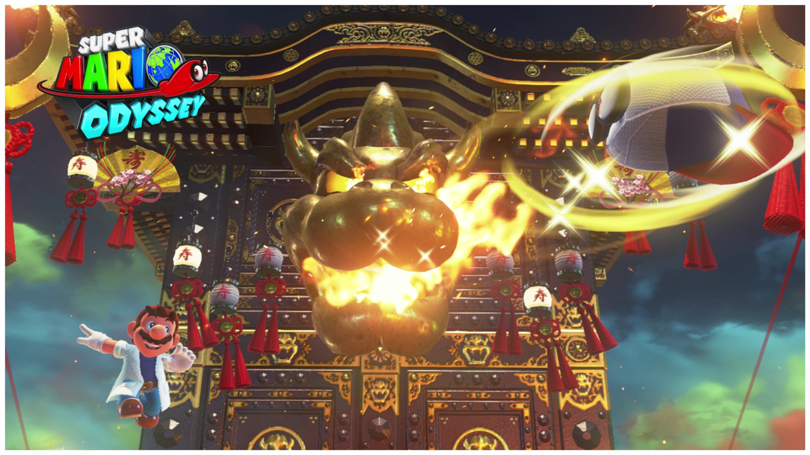
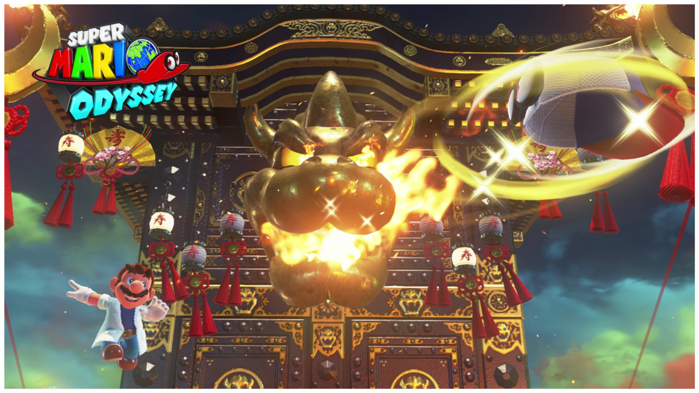

This game was released on October 27, 2017 and it was one of the most talked about games of that year.
The Nintendo Switch system had found a game that made having the system almost a necessity. In this Mario
game the players had a lot to do, not only did you get to save Princess Peach from Bowser (again) but you
also had the challenge of finding moons in order to unlock new levels, and you got to control a ton of
cool and impressive new features. One of the best features of this game was Mario’s companion “Cappy”.
Mario uses Cappy to do some impressive new moves including a very long jump so that Mario can reach places
he never could on his own before!
Listed below were some of my favorite highlights of the game:
- The number of levels in this game kept me engrossed in this game and made it hard to put down
- Searching to find every moon was not only captivating but also challenging. Each level had
specially hidden moons that made me think and strategize. So, it was nice to not only feel happy
when playing it but that I was also getting a challenge.
- One other thing that made this game fun was all of the other characters that we as players could control. On one level we could control a T-Rex on another level we can control our enemies and use them to progress through levels. This was interesting because you can see the creativity of developers and it always made me laugh whenever I possessed a character that had cool powers and abilities.